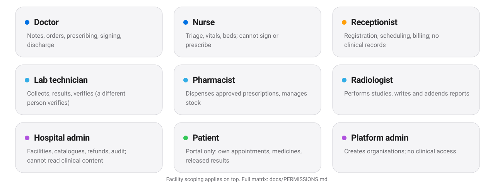
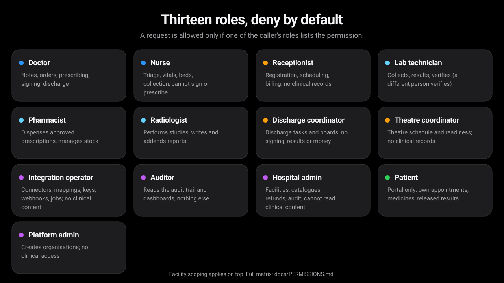

Security and privacy
Built to be trusted with patient records.
The database keeps organisations apart, every request is authorised against a role, and everything that touches a record is on an audit trail you can verify.
Tenant isolation
PostgreSQL row-level security is forced on every tenant-owned table, so a query from one organisation cannot read another's rows even if application code is wrong. Global tables, such as the list of organisations, are not tenant-owned.
Deny by default
Thirteen roles, each with an explicit permission list. A route with no permission is refused. The full matrix is generated from the code, so the documentation cannot drift from behaviour.
Sign-in and sessions
OpenID Connect authorization code with PKCE (S256). Sessions live on the server, the token is stored hashed, and a session ends after 30 minutes idle or 8 hours in total. State-changing requests carry a CSRF token.
Audit trail
Reads and changes are recorded in an append-only, hash-chained log, written in the same transaction as the change. A verify endpoint recomputes the chain.
Break-glass
Restricted records open only with a stated reason, which is itself audited and then reviewed by a second person.
Separation of duties
Enforced in the database, not only in the interface: for example, the person who enters a lab result is not the person who verifies it, and a clinician slot cannot be double-booked.
Roles
Each role sees only its own work.


AI and privacy
Off by default. Drafts only.
Per organisation
AI assistance is off until an administrator enables it for that organisation. It has no tools and cannot change records; it can only produce a draft.
A named person decides
A draft becomes part of the record only after a named clinician reviews it, and that review is bound to the exact revision of the note.
Honest limits
What we have not done.
- No independent penetration test has been carried out.
- Not certified against HIPAA, GDPR, ISO 27001, SOC 2, IEC 62304, NABH or JCI. The gap analysis is kept in the repository.
- The audit trail is tamper-evident, not tamper-proof against someone who owns the database.
- No clinical validation of any model. Drug-interaction and dose checks report “unavailable” because there is no drug database.
- Automated accessibility checks (axe-core, both themes) pass; that is not a conformance claim and there has been no screen-reader testing.
- All screens and figures here use synthetic data.